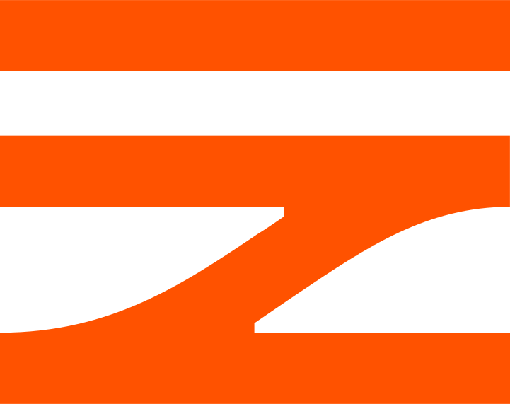

Živé odjezdy ze stanice Správy železnic · aktualizace každých 60 sekund. Pro načítání je potřeba spustit scraper server.
StationTable.aspx?Key=…
Key=455
http://127.0.0.1:4787/api/live-departures
<svg>
Zatím nebyl odeslán žádný odjezd.
Zatím nebyla nalezena žádná tabule.